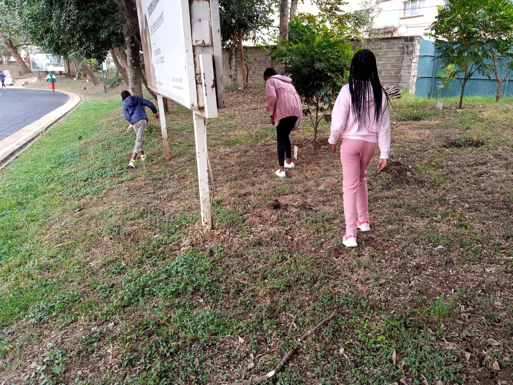
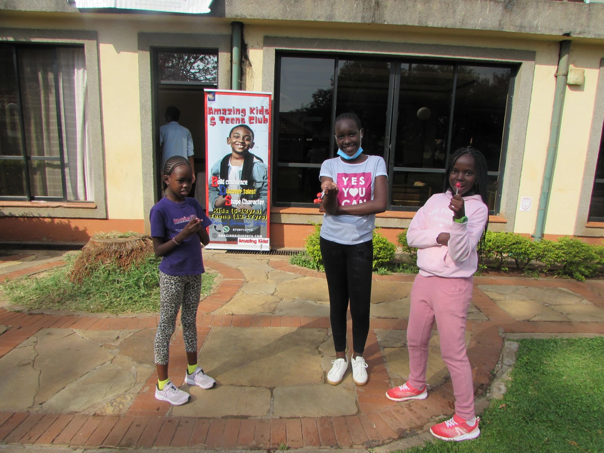
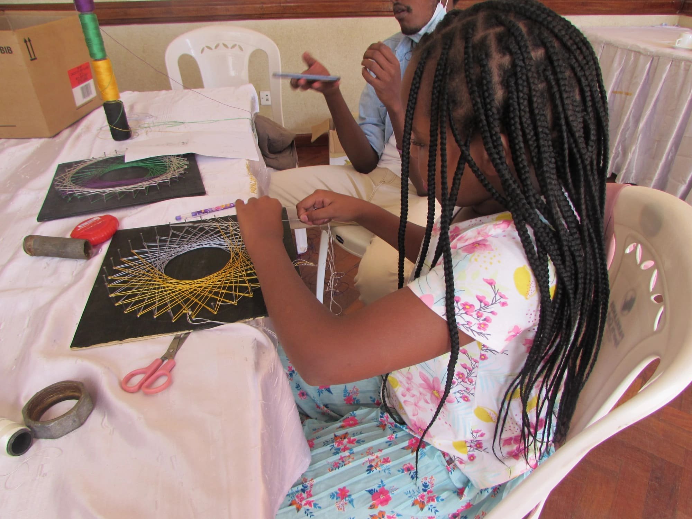
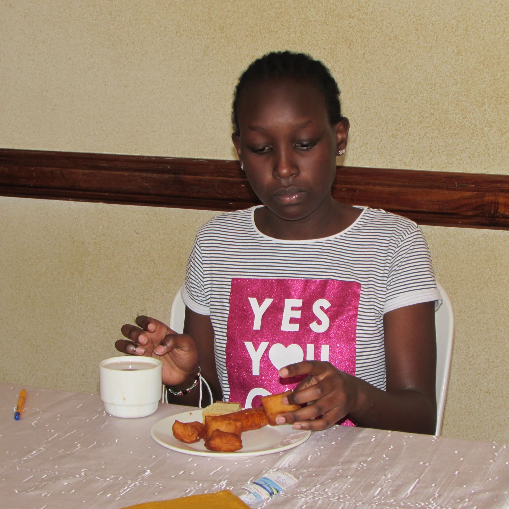
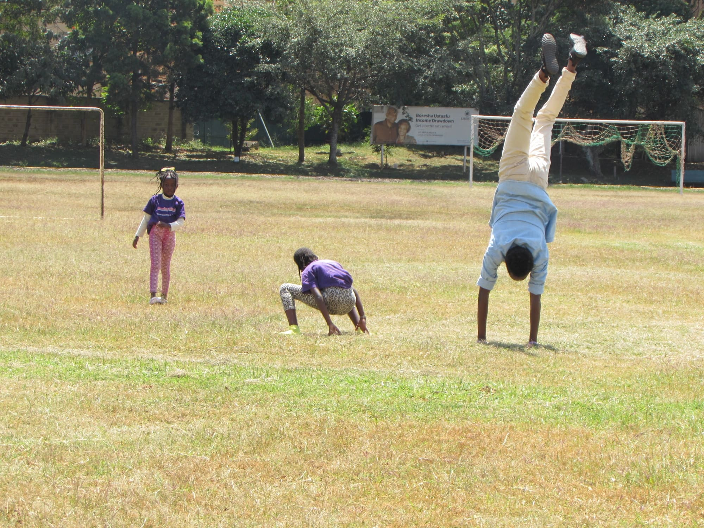
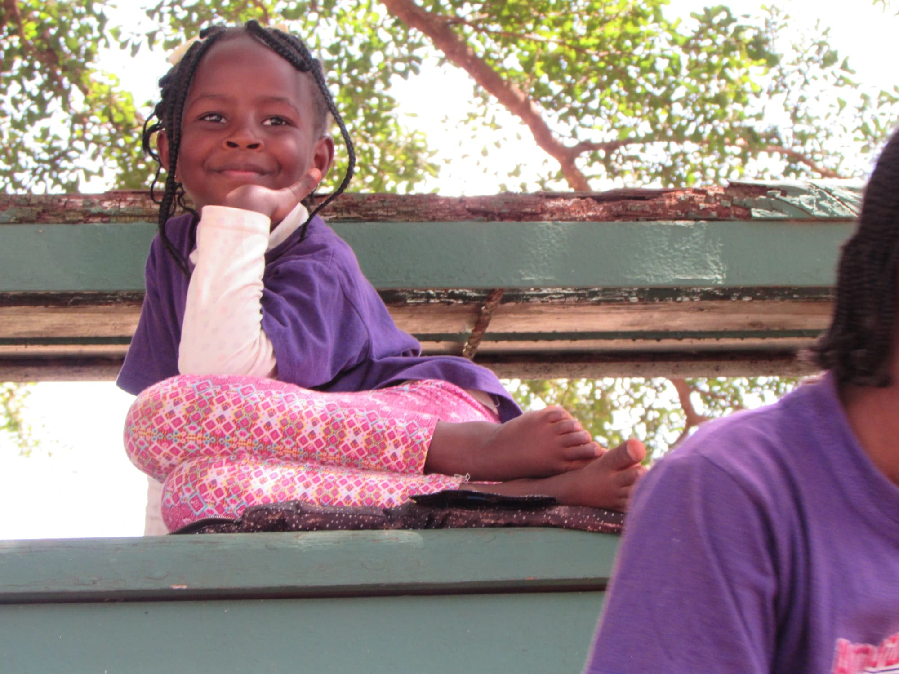
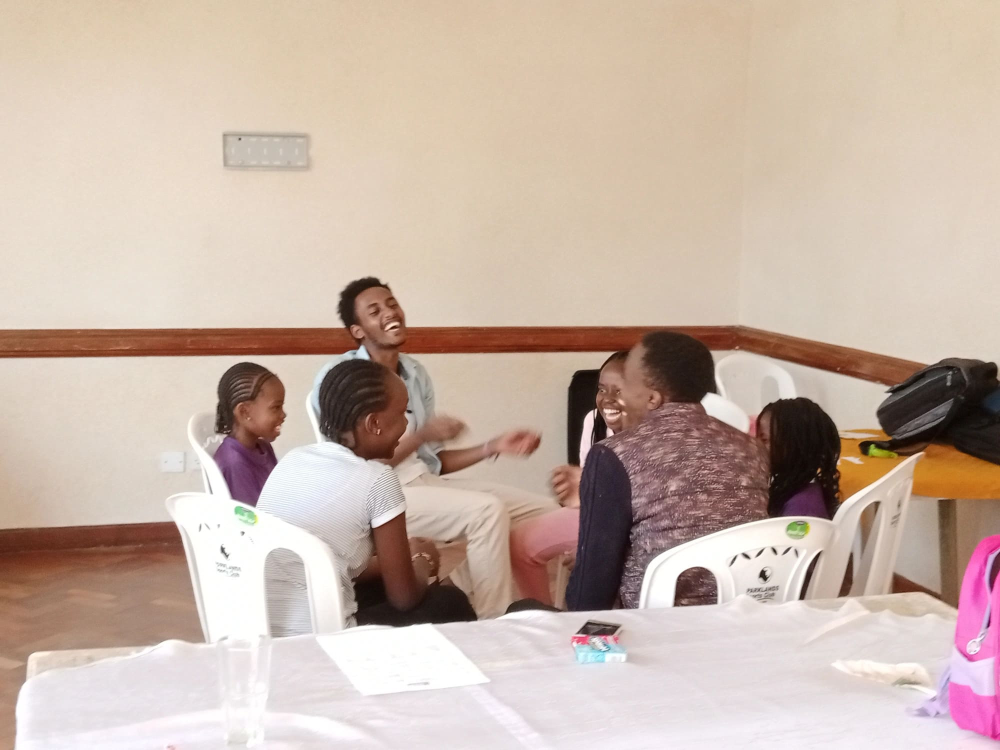
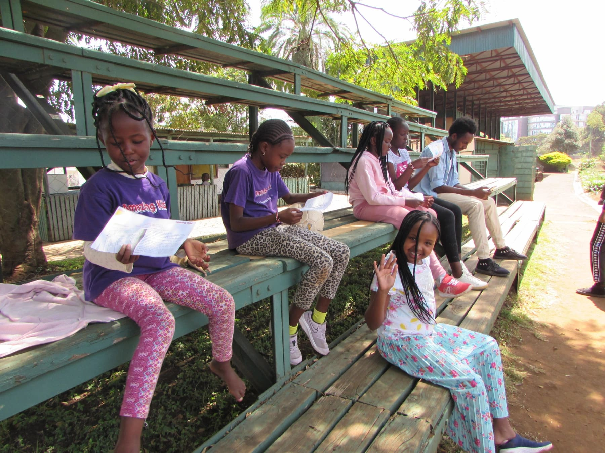

Treasure hunts are fun, challenging and rewarding. The 2nd of July started with one in the morning. There had to be some entry rules; to participate, you had to do one lap around the field then join the search.
It was going to be a two step hunt, and guys successfully completed the first one.
We then did another lap before heading to the final stage which was more rewarding and challenging than the one before. But we came up on top, shining and striving to find every candy no matter how hard some were to find.
What an exciting session that was! We got to class and gathered around to pray. After doing a little catch up on how each person's week was, we sat down for a devotion session.
We learnt the story of the prodigal son. We each took a turn to read a segment of the story in our own creative way.
If you don't know the story, here's a clip of one of our own telling it from her own perspective.
A warm up session was due to keep those energies high.
We decided to shift and spice things up a little bit so we decided to do the craft project next.
We clearly had achieved a lot so far so we took a much needed tea break.
In the spirit of spicing things up, we had a lineup of fun games and activities to do in the field afterwards. We had so much fun in the bouncing castle
in the field doing hand-stand and cat wheel races,
taking some goofy pictures,
bonding
and did a little bit of Simon says.
We finally finished the day off with the money lesson where we learnt about making a spending log and accounting on every penny you get.
The day was a success but sadly it had come to an end. We prayed together then waved each other goodbye as we headed home.